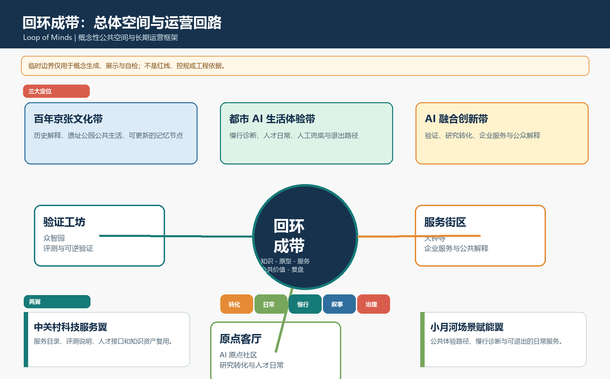
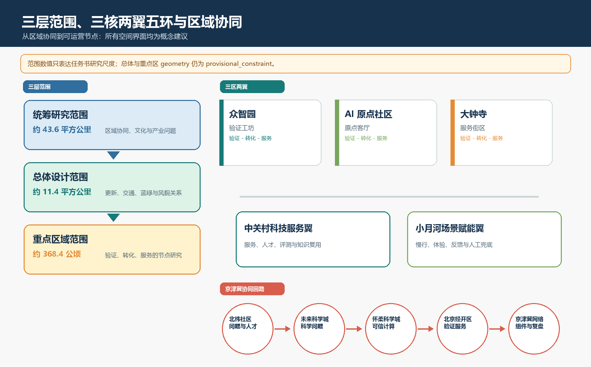
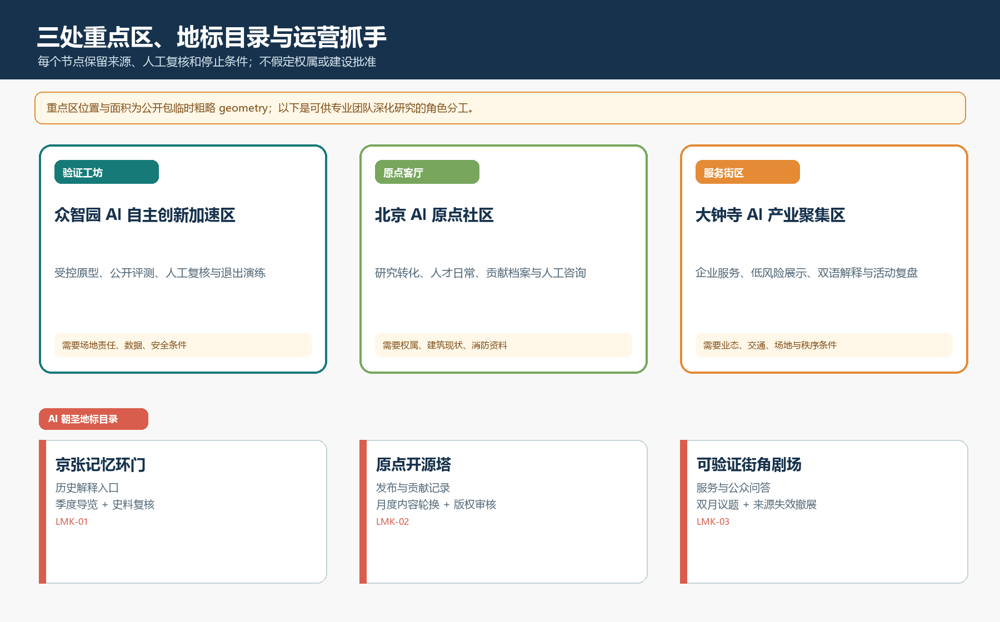
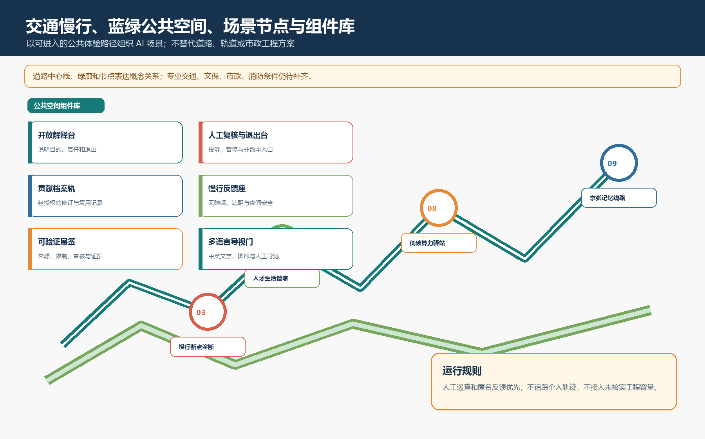
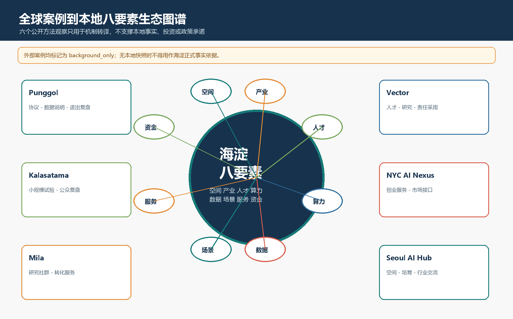
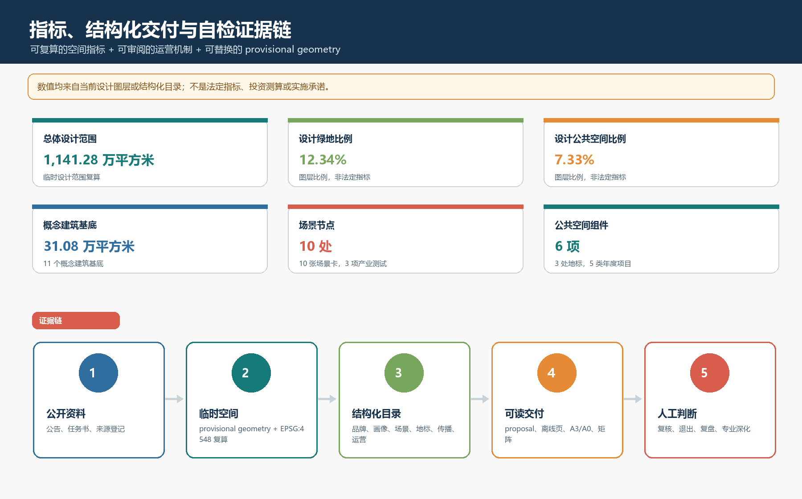

百年京张文化带
京张记忆线路、遗址公园公共空间、可更新历史解释节点。
AI 城市设计正式包 · 离线审阅页 · v0.2.0
Loop of Minds - Centennial Jing-Zhang AI Commons Belt。以一带、三核、两翼、五环连接京张记忆、AI 创新转化、人才日常与公共治理；所有空间和运营内容均为可供专业团队深化研究的概念建议。
总体结构、三大定位与运营回路。临时边界始终保持为临时约束，不伪装为正式红线。

以区域协同、空间组织和可运营节点建立同一条证据链。

众智园、AI 原点社区、大钟寺分别承担验证、转化与服务角色。建筑和更新只表达研究动作，不作拆改留或工程结论。

慢行补链、蓝绿连续和公共解释组件构成 AI 服务可被进入、理解和拒绝的日常界面。

英文主名称为 Loop of Minds - Centennial Jing-Zhang AI Commons Belt；命名系统是主名称、三核、两翼、五环与“记忆动作 + 开放能力 + 空间类型”的地标逻辑。
京张记忆线路、遗址公园公共空间、可更新历史解释节点。
小月河场景翼、慢行诊断、人才日常、人工服务与退出路径。
众智园验证工坊、AI 原点转化客厅、大钟寺服务街区与科技服务翼。
北纬社区：问题与人才接口未来科学城：科学问题接口怀柔科学城：可信计算接口北京经开区：验证服务接口京津冀网络：组件与年度复盘接口
六个案例均为 background_only 的公开方法观察，不能代替海淀空间、投资、企业、政策或实施事实。

把案例拆解为试验协议、数据说明、人工复核、退出复盘和服务目录。
空间、产业、人才、算力、数据、场景、服务、资金分别审查。
仅保留待合同、招采与报价验证的服务成本逻辑，不虚构投资额或产值。
每一项都拆成独立的用户、空间、运营、数据边界、人工复核和退出条件，而不是只列场景名称。
| 用户画像 | 目标与痛点 | 空间触点 | 数据边界 |
|---|---|---|---|
| 高校研究者 | 从研究问题到低风险验证 | 验证工坊、发布厅、评测广场 | 仅授权测试材料 |
| 初创团队成员 | 合规说明、场景验证与展示 | 标准展示区、企业服务客厅 | 不以个人画像或指定供应商为前提 |
| 产业服务人员 | 可验收服务包与复盘 | 科技服务翼、共享客厅 | 最小化登记，不把意向当承诺 |
| 附近居民与照护者 | 安全、无障碍、可解释服务 | 小月河场景翼、慢行节点 | 默认不建个人画像，可撤回 |
| 来访开发者与公众 | 理解并参与公共 AI 问题 | 记忆线路、治理廊、活动路线 | 匿名或自愿署名，不建行为画像 |
运营：公开内容发布、公共问答归档
边界：人工确认版权与隐私
运营：短周期测试、日志与复盘
边界：人工暂停权与退出演练
运营：季度观察、匿名反馈、可逆导视
边界：不追踪个人轨迹
运营：服务目录与人工窗口
边界：非数字替代路径
运营：评测说明与申诉入口
边界：来源失效即撤下
运营：问题征集、协议审查、复盘
边界：知识产权人工核验
运营：模拟或授权材料的公开演示
边界：不展示真实敏感数据
运营：科普、端侧体验、人工咨询
边界：不接入未核实工程容量
运营：导视、史料核验、公众纠错
边界：不以生成内容替代史实
运营：年度旗舰与季度开放日
边界：活动另行审批与安全评估
| 产业测试 | 基线 | 人工复核 | 退出条件 |
|---|---|---|---|
| 城市智能体沙盒 | 问题范围、授权数据、人工处理基线、失败模式 | 日志抽查与错误/偏差/可解释性复核 | 未授权数据、关键输出不可解释、退出演练失败 |
| 慢行断点诊断 | 人工观察、无障碍巡查、匿名反馈 | 专业人员复核后才可进行可逆导视小试 | 安全风险、投诉未闭环、采集超范围 |
| 校企成果转化服务 | 问题来源、权利边界、责任、交付 | 协议、利益冲突、公共表达和复用性核验 | 权利不清、无责任人、无可审计边界 |
三个地标有节目、运营周期与保护性边界；开放贡献档案允许来源标注、纠错、撤回和匿名。
历史解释入口。季度导览与史料复核；不触碰未确认文保边界。
公开发布与贡献记录。月度更新；版权、数据与署名人工审核。
企业服务与公众问答。双月策展；来源或安全问题即撤展。
开放解释台人工复核与退出台贡献档案轨慢行反馈座可验证展签多语言导视门
从线到环、从展示到解释、从技术到公共选择。中英双语不是装饰，而是面向不同受众的可进入路径。
| 目标受众 | 文案方向 | 媒介与语言 | 转化路径 |
|---|---|---|---|
| 研究者与开发者 | 公开挑战、评测说明、知识复盘 | 英文摘要 + 中文完整解释 + 术语表 | 阅读到有责任人的测试申请 |
| 城市治理从业者 | 公共价值、人工复核、无障碍与退出 | 中英双语方法图和复盘摘要 | 交流到独立合规研究 |
| 人才、企业与合作机构 | 低风险服务包和边界透明 | 双语服务目录和责任说明 | 咨询到协议审查与小试 |
| 本地居民与来访公众 | 可提问、拒绝、纠错的公共 AI | 中文优先、简明英语、图形与人工讲解 | 参观到反馈与贡献档案 |
活动 IP 为 Loop of Minds Commons / 回环公共智识季，与主品牌区分并在正式使用前继续完成权利审查。
| 节奏 | 活动 | 交付 | 门槛与转化 |
|---|---|---|---|
| 年度旗舰 | 回环公共智识周 | 双语问题地图、复盘册、贡献档案、下一周期挑战 | 安全、无障碍、版权与人工服务齐备后，进入挑战报名或服务咨询 |
| 第一季度 | 问题开放季 | 问题清单、资料可用性说明、红线清单 | 人工筛选后进入可研究挑战池 |
| 第二季度 | 可验证原型季 | 协议、人工复核、匿名反馈、停止或扩展建议 | 只有复盘通过的组件进入服务目录 |
| 第三季度 | 开发者与公共体验季 | 工作坊、导览、中英说明、纠错清单 | 从一次性活动进入社区贡献和学习 |
| 第四季度 | 证据复盘季 | 公开复盘包、组件库版本、风险清单、次年门槛 | 由独立主体按自身合规程序决定后续研究或服务 |
所有显示值均带中文单位。空间数值来自当前图层复算，结构化数量来自本包目录；它们不是法定指标。
compliance_matrix、standard_matrix、design_depth_matrix 分别把公告任务、标准与成果深度绑定到主体、图层、指标、图纸、离线页和结构化文件。
Agent.1 品牌与区域协同Agent.2 案例与生态Agent.3 画像、场景、测试Agent.4 地标、荣誉、组件Agent.5 文化与传播Agent.6 年度运营与转化
来源、假设和关键限制为人类审阅提供可追溯的边界，而不是把未知资料填成看似精确的答案。

公告、任务书、site package、source registry 和 fact pack 按用途分级。六个外部案例均登记访问日期、background_only、快照状态和审计限制。
临时 geometry、控规与权属缺口、AI 数据边界、外部案例、区域协同和视觉生成限制均在 assumptions.json 中登记。
空间已知指标使用 EPSG:4548；正式 polygon 到位后须统一替换 geometry 并复算。